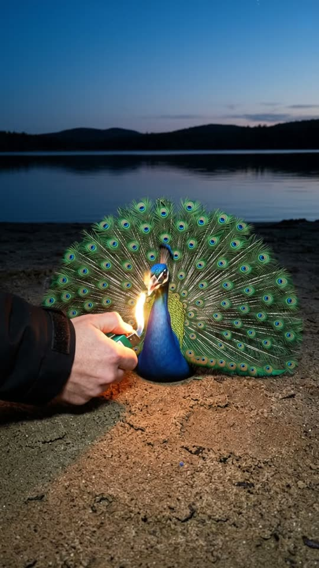
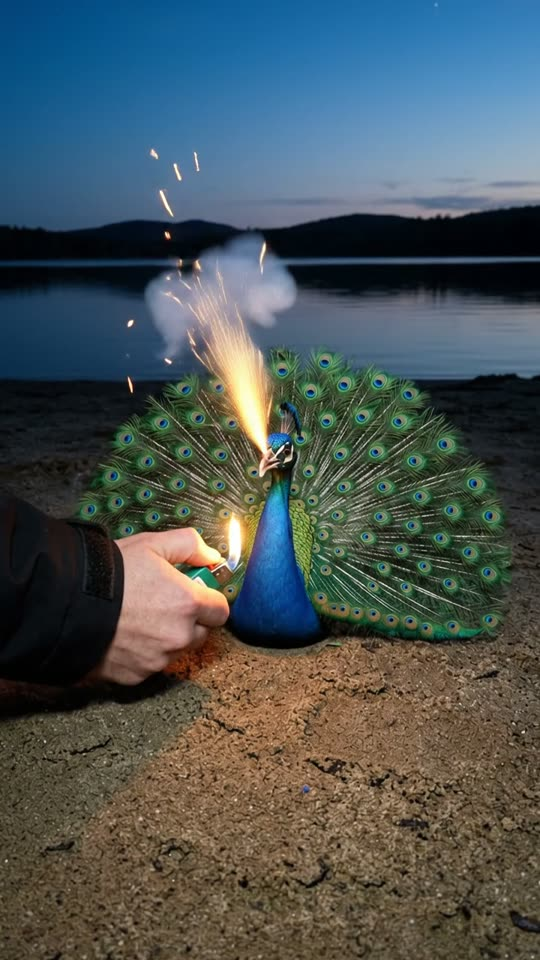
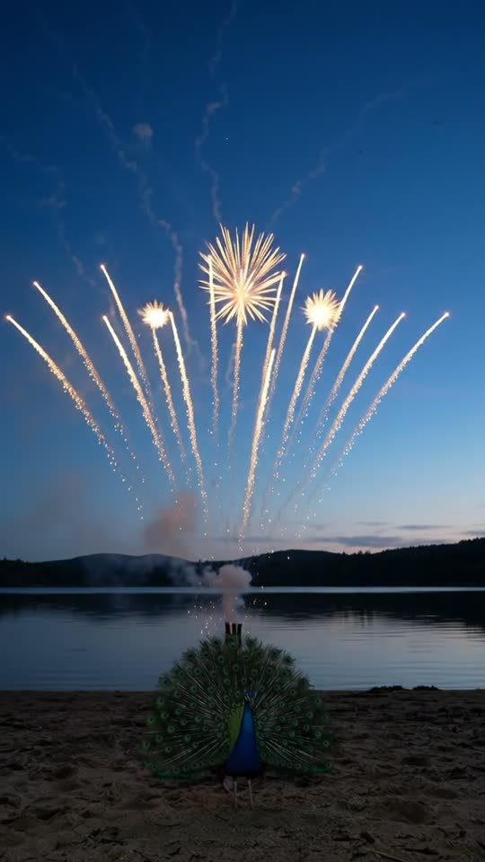
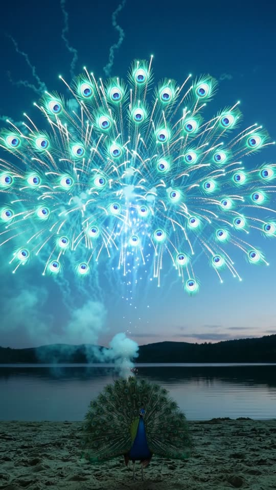

Free prompt pack
Light the beak.Watch the sky.
Nobody built a peacock out of fireworks. One still image and one prompt that describes the shot second by second.
Every prompt, in the order I ran them. Copy them whole.
The first frame
It has to look like a real bird. This image is frame one. The peacock, the lighter, the beach and the lake all come from it, and the flame is already touching the tip of the beak.
Watch out
Describe feathers, eyes and crest, never how it's built. "Painted body" and "cardboard tubes" give you a ceramic figurine.

The prompt 140 words
Close-up night photo at blue hour on the sandy shore of a lake, taken one metre away at the height of the bird's head. A life-size peacock that looks completely real stands on the sand facing the camera: iridescent cobalt-blue feathers on its head, neck and chest, a small fan-shaped crest, dark eyes with white markings, an ivory beak pointing slightly down. Behind it, its enormous spread tail of long green feathers, each ending in a round blue-and-bronze eye, fans out in a full half circle. From the left, a hand in a black sleeve holds a small green lighter whose yellow flame touches the very tip of the peacock's beak, lighting its face with a warm glow. Behind, the dark still lake and a line of low hills under a deep blue twilight sky. Real phone photo, natural colour.
The take
Ten seconds, written second by second. Add the image from step 01 as the reference, set 10 s, 9:16, 720p and audio on, and paste the prompt whole.
- 0–1.4 sthe beak catches like a sparkler
- 1.4–4 sstep back, then stop
- 4–5.6 sforty shells from behind the tail
- 5.6–7 sone golden fan over the lake
- 7–8.8 sit turns into feather-eyes
- 8.8–10 sgold falling into the water
Watch out
The camera only moves while the beak burns. Fireworks with a moving camera fall apart.
Fragments



The prompt 1487 words
FORMAT Real handheld phone video at night, seen as the finished exported video file: the full picture edge to edge, nothing on top of it. One continuous take in real time, no cuts. Vertical frame. The video runs at 24 fps. No frame is repeated. Real time, 1x speed, never slow motion. SCENE At blue hour on a lake shore stands a firework built to look exactly like a real peacock, its tail spread. A hand holds a lighter to the very tip of its beak; the beak itself catches and spits sparks like a sparkler, the person filming walks backwards to a safe distance, and a hidden battery behind the peacock's tail fires its shells into the sky: they burst into one huge golden fan above the lake that turns into a peacock's tail of turquoise and violet feather-eyes, a peacock made of fireworks, reflected in the water. The flame is already touching the tip of the beak in the first frame. There is no fuse anywhere. The take ends with the firework peacock spread across the sky, its sparks starting to fall. EXACTLY ONE PEACOCK ON THE SAND. REFERENCE IMAGE Use it for the peacock, the hand and the lighter (the lighter goes to the tip of the beak, as written below), the beach, the lake, the hills, the sky and the light. The peacock matches it exactly, zero drift, no smoothing: it looks like a real bird in every frame. The action is described below. THE PEACOCK A firework built to look exactly like a real, life-size peacock, standing on the sand facing the camera: iridescent cobalt-blue feathers on its head, neck and chest, a small fan-shaped crest, dark eyes with white markings, an ivory beak pointing slightly down, and an enormous spread tail of long green feathers, each ending in a round blue-and-bronze eye, in a full half circle. There is no fuse, no wire and no cord anywhere: the tip of its beak itself is what gets lit, and it burns like a sparkler. It stands perfectly still like a statue: it never blinks, never turns its head, never walks; only its feathers stir in the breeze. Behind its tail, hidden from the camera, sits a battery of firework tubes on the sand. LOCATION MAP Our phone is held by the person who lights the beak, who is never seen except for one hand. At the start the phone is one metre from the peacock, at the height of its head. Behind the peacock: the flat sandy shore, then a dark still lake about twenty metres away, a line of low black hills along the far shore, and the deep blue twilight sky above. When the person steps back, they walk straight back along the sand, away from the lake, and stop eight metres from the peacock. FIRST FRAME Already moving: the peacock on the sand in the lower middle of the frame, its spread green tail of feather-eyes stretching across the frame at y 34-58%; the hand in a black sleeve enters from frame-left holding a small green lighter, its flame touching the very tip of the peacock's beak at x 47%, y 51%; behind, the dark still lake, the line of low hills and the deep blue sky fill the top half. Instant read: someone is lighting a peacock by its beak. No delayed reveal. OPTICS Main phone lens, wide. Night: the sky keeps its deep blue, the shadows go noisy, the bursts are bright but never blow the whole frame to white. CAMERA Handheld, one person, two phases only. 0–1.4 s — Still, one metre from the peacock, a faint tremor. 1.4–4.0 s — The person walks straight backwards, eight metres, at a steady walking pace, keeping the peacock in the middle of the frame and tilting up a little, until the peacock stands small at the bottom of the frame, at y 78%, the lake and the hills behind it at y 70%, and the sky fills the top two thirds. 4.0–10 s — The person stops and holds the phone still: faint tremor only. From 4.0 s the camera never moves again: no walking, no pan, no tilt to follow the shells, no zoom, no cut. ACTION TIMING 0–1.4 s — The flame touches the very tip of the beak; the tip catches and starts to spit a jet of small orange sparks and a thread of white smoke, like a sparkler. The hand pulls back out of frame-left and does not return. 1.4–4.0 s — While the camera backs away, the beak keeps spitting sparks and smoke, lighting the peacock's blue chest from below; nothing else has fired yet. 4.0–5.6 s — From behind the peacock's tail, the hidden tubes fire one after another from left to right in a fast volley: each one thumps and sends a glowing shell straight up with a thin golden trail, about forty trails climbing into the sky above the lake, rising from behind the green feathers. 5.6–7.0 s — High above the lake, the shells burst together into one huge golden fan of sparks, shaped exactly like a peacock's spread tail, wider than the hills below it. 7.0–8.8 s — The golden sparks change colour: rows of round turquoise rings with violet-blue centres open across the fan, like the eyes of peacock feathers, and a column of blue sparks rises up the middle as the body. A peacock made of fireworks spreads across the whole sky, reflected in the lake. 8.8–10 s — It holds, glowing; its outer sparks start to drift down in slow golden trails, and smoke lit in blue and gold drifts to frame-left. The take ends on the firework peacock in the sky and the small peacock on the sand below it. PHYSICS AND SCALE Real fireworks: every shell comes out of a tube behind the peacock's tail and rises in a straight line; it bursts high above the lake; the boom arrives half a second after each flash, because it is far away. Sparks fall with gravity and fade; the smoke is white-grey, lit from inside by the bursts, and drifts slowly with the breeze. The peacock in the sky is made of thousands of sparks, not a solid drawing of light. It is about ten times wider than the hills seem tall. Every burst lights the beach, the lake and the smoke in its own colour and is reflected in the still water. The peacock on the sand never moves, never burns and never catches fire; only its beak sparks. Nothing morphs. LIGHTING Blue hour after sunset: deep blue sky with a last pale band on the horizon, the beach and the hills almost black. At the start the only light on the peacock is the lighter's flame and the sparks from its beak, glinting on its blue feathers. Then the bursts are the light: golden, then turquoise and violet, flashing across the sand, the feathers and the water. AUDIO No music, no score, no narration, no subtitles. Phone microphone outdoors at night: the click of the lighter, the hiss and crackle of the burning beak, footsteps on sand as the person backs away, then a fast run of hollow thumps as the tubes fire, the whistle of rising shells, and half a second after each flash a deep rolling boom and crackle echoing off the hills across the lake. Nobody speaks. LOOK Real phone video at night, seen as the finished exported file: deep depth of field like a small phone sensor, no cinematic bokeh, noise in the dark sky, slight over-sharpening, the brightest bursts slightly clipped. No camera app interface: no shutter button, no gallery thumbnail, no record button, no icons, no timer, no zoom buttons, no frame lines, no recording dot. No phone screen anywhere in frame. No colour grade, no teal-and-orange, no film grain, no lens flare, no slow motion, no cuts. The peacock looks like a real bird, never a ceramic figure or a toy. NO FULL-FRAME EVENTS The smoke never covers the frame; the beach, the lake, the hills and the sky are visible at every moment. No burst blows the frame to white. No flash, no fade, no blur used as a transition. POSITIVE LOCKS Exactly one peacock on the sand, the same in every frame, lit only at the tip of its beak. No fuse, no wire, no cord anywhere in frame. One hand only, in the first second and a half; nobody else appears and no second phone is ever in frame. The camera moves only between 1.4 s and 4.0 s and then stays still. No captions, no subtitles, no on-screen text, no watermark, no logos, no letters anywhere, no camera app interface, nothing on top of the picture. ONE PHONE. ONE HAND. ONE PEACOCK LIT BY THE BEAK. ONE PEACOCK IN THE SKY. NO CUTS. NO INTERFACE. NO SLOW MOTION. NO MUSIC.
Toy peacock or a fuse?
Fix the image, not the video. If your peacock looks like a figurine, or a grey fuse hangs from it, edit the image with this before you make the video.
The prompt 97 words
Edit this photo. Keep the beach, the lake, the hills, the sky, the light and the hand exactly as they are. Make the peacock look completely real: iridescent cobalt-blue feathers on its head, neck and chest, a small fan-shaped crest, dark eyes, an ivory beak, and an enormous spread tail of long green feathers, each ending in a round blue-and-bronze eye. Remove any fuse, wire or cord: its chest and the sand below it are clean and bare. The lighter's yellow flame touches the very tip of the peacock's beak, lighting its face with a warm glow.
Rule 01
Real, not a toy
Describe how it looks, not how it's made. Feathers, eyes, a crest: the model copies what you name.
Rule 02
No fuse
If the original doesn't show a fuse, don't write one, or a grey cord shows up hanging to the sand. Light the beak itself.
Rule 03
Stop the camera
Back away while the beak burns, then stand still. Every shell has to come out of something you can point to.
That's the whole build
Now go lightsomething.
If yours works, send it over. I read every DM and the good ones end up on the account.
@martiiifons